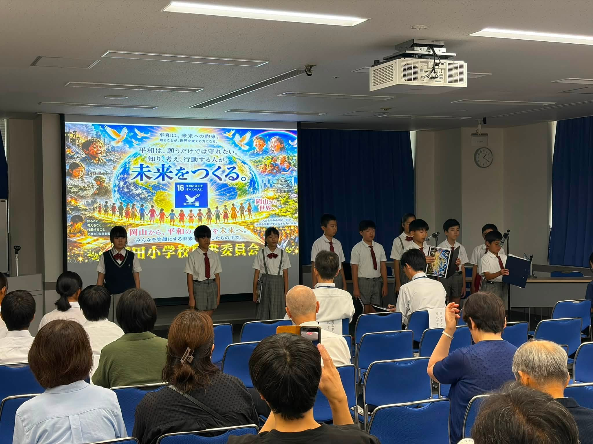
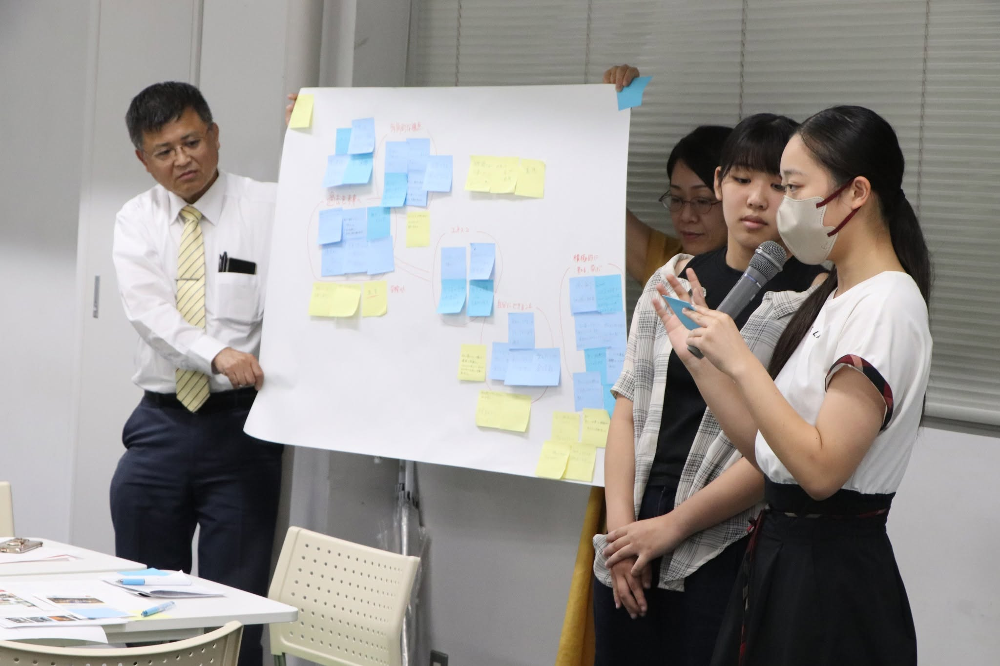
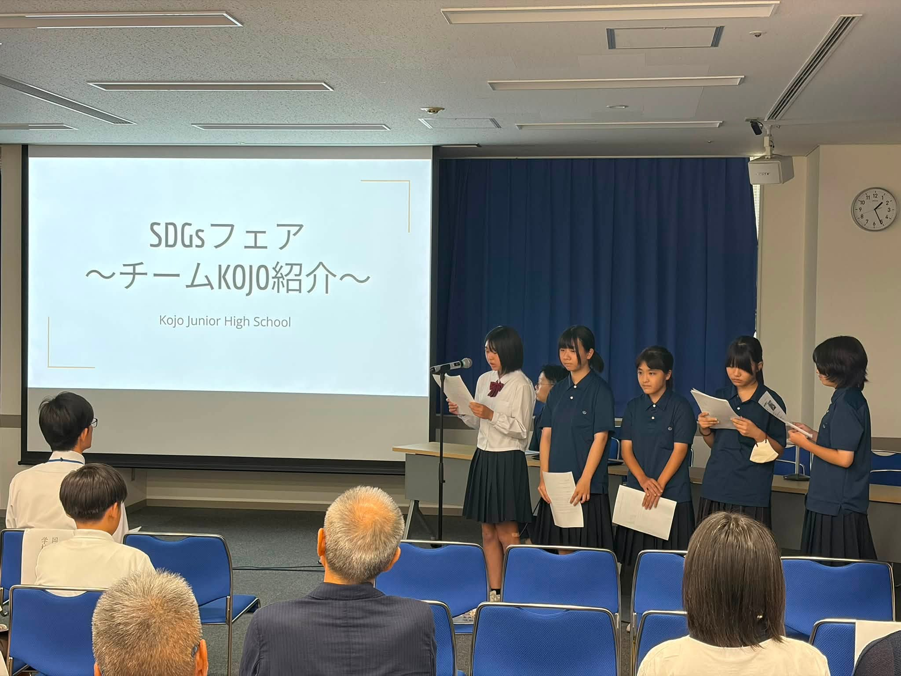
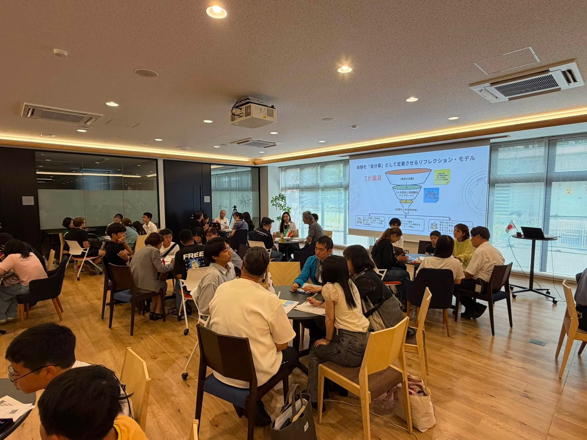
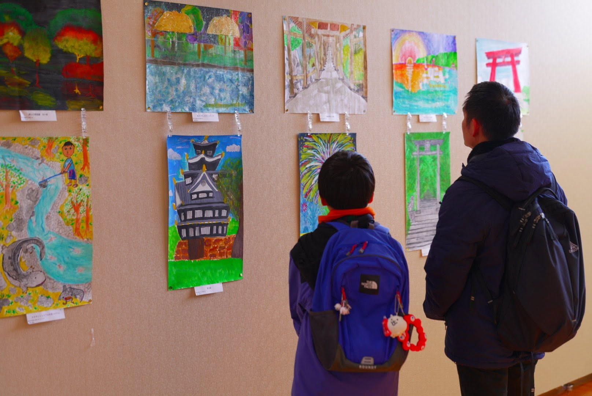

国際交流やSDGs、地域活動に興味のある方、大歓迎！
私たちと一緒に、岡山から世界につながる活動をしてみませんか？
持続可能な開発目標（SDGs）の達成に向けた、ESD（持続可能な開発のための教育）や環境保護などの地域活動をご紹介します。
ESD（持続発展教育）や環境教育・環境学習を通じて、持続可能な地域づくりを支援します。
場と教材と人材の提供・支援、担い手人材の育成など、学びを行動につなげる活動です。


未来の地球を担う人材を育成するため、持続可能な開発のための教育を地域全体で推進します。

誰一人取り残さない持続可能で多様性と包摂性のある社会の実現に向けて、地域から世界へ貢献します。

次代を担うユース世代の国際交流やボランティア活動を支援し、グローバルな視野を養います。

教育・科学・文化の発展を通じて、人々の心の中に平和のとりでを築く活動を展開しています。
持続不可能な社会から持続可能な社会へと、世の中が大きく変わろうとしている中で、その核となる人づくりであるESD、ユネスコ活動はとても大きな使命を持っています。地域のユネスコ協会だからこそできる活動に積極的に取り組んでまいります。
READ MORE